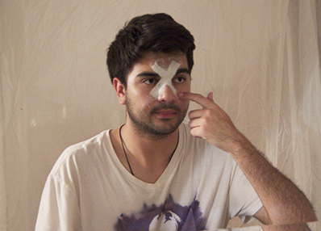

<!--START SLIDE-->

<div>
  <div class="table-cell-left">
    <h2>Plaster X</h2>
    <div style="width:360px;">
Cut two strips of plaster wrap and dip them in water. Then apply the wet strips to your face in an &ldquo;X&rdquo; formation starting on your forhead between your eyes, as shown on the right picture.
</div>
  </div>
  <div class="table-cell-right">  </div>
</div>
<!--END SLIDE 1-->